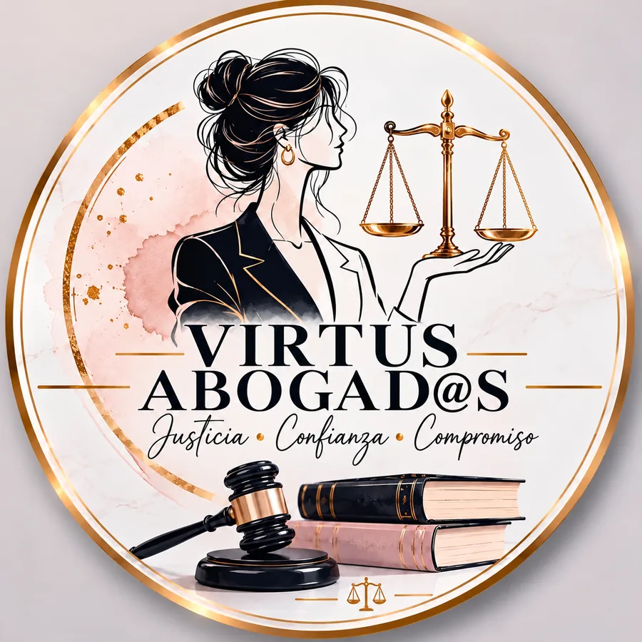

Divorcio
Por mutuo acuerdo o incausado. Cuidamos la custodia de tus hijos, la división de bienes y que el proceso sea claro y ágil.
- Convenio y custodia
- Convivencias y pensión
- Liquidación de bienes

Despacho jurídico familiar en Iztapalapa
Divorcio, pensión alimenticia, violencia familiar y testamentos. Orientación clara y confidencial desde tu primer mensaje.

No es solo un trámite. Es tu familia, tus hijos y tu patrimonio. Por eso en Virtus cada caso se trabaja con estrategia, discreción y un compromiso que no termina con la audiencia.
Áreas de práctica
Cada área tiene su propio camino legal. Te mostramos el tuyo con claridad desde el primer día.
Por mutuo acuerdo o incausado. Cuidamos la custodia de tus hijos, la división de bienes y que el proceso sea claro y ágil.
Solicitamos, aumentamos, reducimos o exigimos el cumplimiento de la pensión, según las necesidades reales de tus hijos.
Tu seguridad es lo primero. Te orientamos con absoluta discreción para salir de la violencia con respaldo legal.
Si estás en peligro inmediato, llama al 911.
Necesito ayuda, quiero hablarQue tu patrimonio llegue a quien tú decidas, sin pleitos ni sorpresas. Planeamos hoy para proteger a los tuyos mañana.
Un proceso claro, sin sorpresas y sin lenguaje complicado. Tú siempre sabes en qué punto estamos.
Estoy listo para empezarCuéntanos qué está pasando por WhatsApp. Sin formalismos y con total confidencialidad.
Revisamos tu situación y tus documentos para identificar tus derechos y los caminos posibles.
Te explicamos opciones, tiempos y siguientes pasos en lenguaje claro, antes de avanzar.
Nos encargamos de los trámites y las audiencias, y te mantenemos informado en cada etapa.
Cercanía humana, rigor jurídico y una comunicación directa. Así trabajamos en Virtus.

Sabemos que no llegas por gusto. Te escuchamos con respeto y tratamos tu historia con total confidencialidad.
Sin tecnicismos ni letra pequeña. Entiendes cada paso, cada documento y cada decisión.

No hay dos familias iguales. Diseñamos la ruta legal que mejor protege lo que a ti te importa.
Un mensaje basta para que revisemos tu situación.
Estoy listo para dar el pasoCol. Jacarandas, Iztapalapa. Cerca del Metro Constitución de 1917.
Ver cómo llegarPreguntas frecuentes
No. En la Ciudad de México el divorcio puede solicitarlo uno solo de los cónyuges, sin necesidad de expresar una causa. Si ambos están de acuerdo, el proceso suele ser más ágil. Revisamos tu caso para indicarte la ruta adecuada.
Depende de si hay acuerdo entre las partes, de si existen hijos o bienes y de la carga de los juzgados. Un divorcio de común acuerdo avanza más rápido que uno contencioso. En tu primera conversación te damos un estimado realista.
No existe un porcentaje fijo para todos los casos. El juez considera las necesidades de quien recibe los alimentos y las posibilidades económicas de quien debe darlos. Nosotros preparamos las pruebas para que el monto sea justo.
Existen medidas para exigir el cumplimiento, como el aseguramiento de bienes, el descuento directo del salario y, en ciertos casos, el registro de deudores alimentarios morosos. Te ayudamos a iniciar el proceso.
Primero, tu seguridad. Si hay peligro inmediato, llama al 911. Después escríbenos con total discreción: te orientamos sobre medidas de protección, denuncia y los pasos legales para ti y tus hijos.
No. Sirve para que tu casa, tu dinero o cualquier bien llegue a quien tú decidas y para evitar conflictos familiares y juicios sucesorios largos. Mientras antes lo hagas, mejor.
Solo tu situación. Si los tienes, ayudan el acta de matrimonio, las actas de nacimiento de tus hijos, una identificación y cualquier documento relacionado. Si no los tienes, empezamos igual. Todo lo que nos cuentas es confidencial.
¿Tu duda no está aquí? Pregúntanos directamente.
Quiero resolver mi duda ahoraContacto
Cuéntanos tu situación por WhatsApp. Te respondemos con claridad y sin juicios.
Llena los datos y se abrirá WhatsApp con tu mensaje listo para enviar.